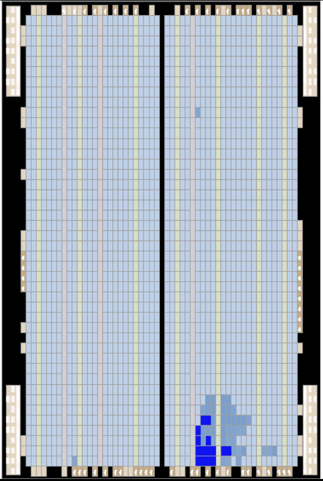

Overview
For Digital Logic and Computer Organization, I built a numeric display and calculator from individual logic gates in Verilog, ran both on an Intel Cyclone V FPGA, and compared how different designs trade area for speed.
Highlights
